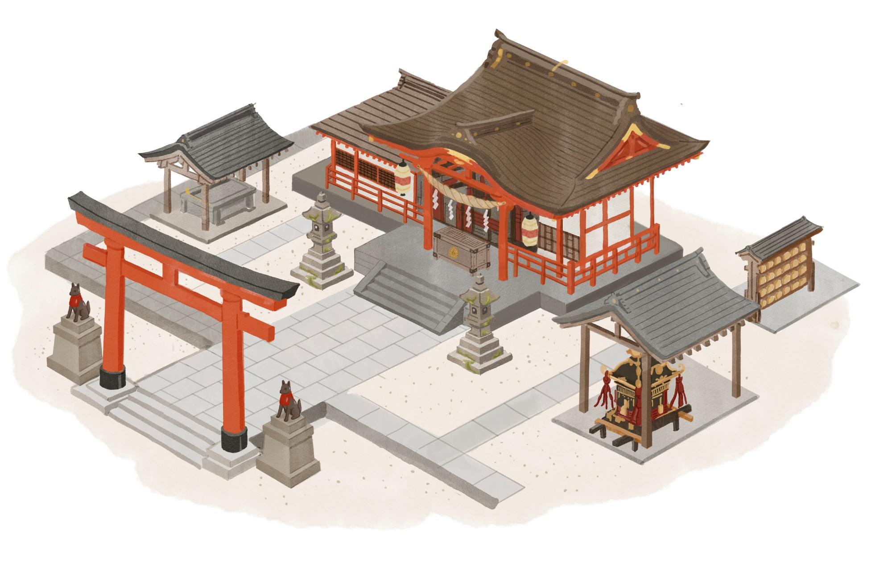

This page needs your camera. Tap the button, then choose Allow.

A Shinto Shrine will appear in front of you in 3D. It is not tied to the picture, so you can look at it from anywhere.
Keep your camera on: the shrine stands over the live view around you. This is an AR experience, so it needs permission to use your camera. The video stays on this phone and nothing is recorded or sent anywhere.